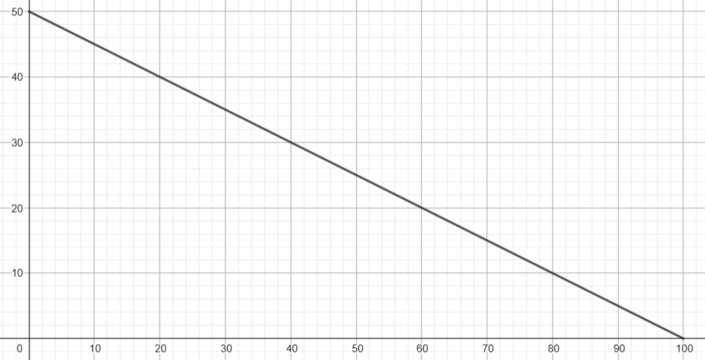
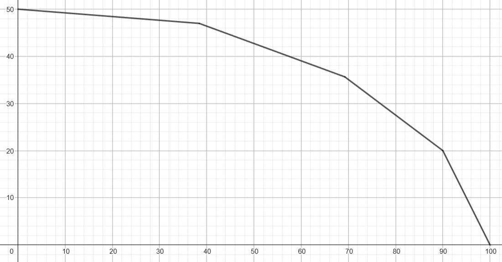
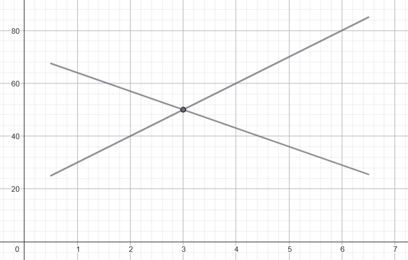

Some Econ Things
Here are some economics things I've learned, in no particular order.
This page is not remotely exhaustive of the field.
Production–possibility frontier
Andy runs a bakery. Or at least, he owns several robots that produce baked goods. Each robot can use up to \(100\) units of energy per day, the cost of which we will ignore.
Andy's menu is simple: he only sells apple pies and brownies. For the \(i\)-th robot, he knows that:
- If it uses all its energy on making apple pies, it will produce \(a_i\) of them;
- If it uses all its energy on making brownies, it will produce \(b_i\) of them.
How can Andy allocate his robots efficiently?
One robot
Let's start simple and assume Andy only has \(1\) robot. Say \(a_1 = 100\) and \(b_1 = 50\).
If the robot only makes apple pies, then it produces \(100\) apple pies and \(0\) brownies a day. We'll represent this as the point \((100, 0)\). If the robot only makes brownies, then it produces \(0\) apple pies and \(50\) brownies a day, which we'll represent as \((0, 50)\).
Of course, these are not the only two possibilities. For example, the robot can use \(50\) units of energy for apple pies and \(50\) units of energy for brownies. Then it produces \(50\) apple pies and \(25\) brownies a day, which we'll represent as \((50, 25)\). Here we're assuming that energy consumption is linearly proportional to the production of baked goods; let's not give ourselves a headache.
We can see that, if the robot uses all its energy, the set of all possibilities is represented by a straight line connecting \((0, 50)\) and \((100, 0)\). Naturally, its slope is negative; specifically it's \(-\frac{1}{2}\).

This line is called the production–possibility frontier, or PPF for short.
Here's a nice interpretation: the robot starts out at \(0\) apple pies and \(50\) brownies, and it can then "convert" \(\frac{1}{2}\) brownie into \(1\) apple pie until there are no more brownies left. Conversely, if the robot starts out at \(100\) apple pies and \(0\) brownies, it can convert \(2\) apple pies into \(1\) brownie until there are no more apple pies left.
These trade-offs are also known as the opportunity cost. The opportunity cost of \(1\) apple pie is \(\frac{1}{2}\) brownie, and the opportunity cost of \(1\) brownie is \(2\) apple pies. They are reciprocals of each other, because that's how math works.
Now, it's possible that the robot doesn't use up all its energy. For instance, if the robot uses \(20\) units of energy for apple pies and \(20\) units of energy for brownies, then it produces \(20\) apple pies and \(10\) brownies, which is the point \((20, 10)\). Unsurprisingly, this point lies below the PPF. This is clearly not efficient for Andy, assuming he only cares about producing baked goods. So from here, we'll just care about points that lie on the PPF.
Many robots
When there are multiple robots, it gets interesting, because not all robots are equally "good" at producing apple pies and brownies, for some notion of "good" we'll define shortly.
If Andy only cared about producing apple pies, then this is easy: the robots can produce \(a_1 + a_2 + \ldots + a_n\) apple pies a day. Similarly, if Andy only cared about producing brownies, then the robots can produce \(b_1 + b_2 + \ldots + b_n\) brownies a day.
But what happens in the middle? Using our conversion idea from earlier, to convert \(b_1 + b_2 + \ldots + b_n\) brownies into \(a_1 + a_2 + \ldots + a_n\) apple pies, each robot itself should gradually shift its production from brownies to apple pies. Specifically, the \(i\)-th robot gradually converts \(b_i\) brownies into \(a_i\) apple pies.
To maximize efficiency, Andy should greedily order the robots by increasing \(\frac{b_i}{a_i}\). The robot with the lowest \(\frac{b_i}{a_i}\) converts all its brownies to apple pies, then the next robot does the same, and so on, until all robots have finished their conversion.
Coming back to English, robots with a lower \(\frac{b_i}{a_i}\) are "better" at producing apple pies relative to brownies, so Andy should allocate them on apple pie duty first. To introduce some terminology, these robots have a comparative advantage in producing apple pies over other robots.
On the other hand, robots with a higher \(\frac{b_i}{a_i}\) are "worse" at producing apple pies relative to brownies, so Andy should only let them produce apple pies as a last resort, when he's run out of good apple pie producers. These robots instead have a comparative advantage in producing brownies.

This causes the PPF to become concave: starting from the curve's \(y\)-intercept, each segment's slope decreases until it reaches the \(x\)-intercept. In more realistic models, you wouldn't necessarily have discrete segments like this; it'd just be a smooth continuous curve.
It's worth noting that, if all the robots had the same \(\frac{b_i}{a_i}\), then the PPF degenerates into a straight line as before. This is not to say that all robots perform equally well. It's just that none of them have a comparative advantage. It's entirely possible for one robot to produce more apple pies or brownies using the same amount of energy; this is called an absolute advantage.
Trading
Andy's boyfriend Benny also runs a bakery just across the road. They haven't merged yet, since they (sensibly) want to keep their relationship low-key for the time being.
We'll assume a linear PPF for both Andy and Benny. Again, if Andy's robots used all their energy on apple pies, they'd produce \(100\) apple pies a day. If they used all their energy on brownies, they'd produce \(50\) brownies a day. The corresponding numbers for Benny are \(75\) apple pies and \(45\) brownies a day. The boys just really like apple pies and brownies, don't worry about it.
Let's put everything in a table:
| Andy | Benny | |
|---|---|---|
| Apple pies | \(100\) apple pies | \(75\) apple pies |
| Brownies | \(50\) brownies | \(45\) brownies |
If Andy and Benny never interacted with each other and lived in autarky, then they could only ever hope to produce as efficiently as constrained by their respective PPFs. However, with the power of love trading, they can obtain consumption combinations outside their PPFs.
Let's now consider Andy's and Benny's respective opportunity costs:
| Andy | Benny | |
|---|---|---|
| Apple pies | \(\frac{1}{2}\) brownie | \(\frac{3}{5}\) brownie |
| Brownies | \(2\) apple pies | \(\frac{5}{3}\) apple pies |
Notice that Andy has a comparative advantage in producing apple pies, since it costs fewer brownies per apple pie. Conversely, Benny has a comparative advantage in producing brownies, since it costs fewer apple pies per brownie.
With two goods and linear PPFs, one of them should have a comparative advantage in one thing, and the other one should have a comparative advantage in the other thing. Again, that's how math works. The only exception to this is when neither has a comparative advantage over anything, but then trading wouldn't be useful anyway.
Coming back to this example, since Andy has the comparative advantage in producing apple pies, he decides to focus on only producing apple pies. Similarly, Benny decides to focus on only producing brownies.
Andy and Benny meet up at the nearest café, baked goods in hand. Andy offers \(18\) apple pies, and Benny offers \(10\) brownies. Is this a reasonable trade?
Well, the price of a trade can be expressed two ways: both from the perspective of Andy, and from the perspective of Benny. For Andy, he's converting \(18\) apple pies into \(10\) brownies, so the price of this trade is \(\frac{9}{5}\) apple pies per \(1\) brownie. This is less than if he had just used his robots to convert \(2\) apple pies into \(1\) brownie, so he's happy.
For Benny, it's basically the same thing. He's converting \(10\) brownies into \(18\) apple pies, so the price of this trade is \(\frac{5}{9}\) brownies per \(1\) apple pie. This is less than if he had just used his robots to convert \(\frac{3}{5}\) brownies into \(1\) apple pie, so he's also happy.
Mathematically, if the price of \(1\) apple pie is between \(\frac{1}{2}\) and \(\frac{3}{5}\) brownie, then both sides are happy. Similarly, if the price of \(1\) brownie is between \(\frac{5}{3}\) and \(2\) apple pies, then both sides are happy. In the end, both boys have achieved a consumption combination outside their respective PPFs.
Note that Andy has an absolute advantage over Benny in both apple pies and brownies (Benny gets teased relentlessly over this). However, it is ultimately still worth it for both sides to trade.
Market price
Of course, no bakery is without customers, so let's not forget about them.
How should Andy and Benny price their items, say, their brownies? First of all, they are competitors in close proximity (or at least, that's what the public thinks), so they should sell brownies at roughly the same price. If Andy's brownies were way more expensive, then people would flock over to Benny's bakery to get their brownie fix instead, and vice versa.
But that's in relation to each other. How should they even decide the price in the first place? Well, with… more relations. Andy has some baker friends whom he can ask how much they sell their brownies for at their bakeries. Likewise, Benny has some baker exes enemies whom he spies on with the help of Andy. And of course, there's the wonderful Internet. Just look up brownie prices and there you go.
The point is, all these prices from all these sources should (more or less) converge1. Andy and Benny can sniff around nearby bakeries, but so can the customers. If the two boys set their price too high, then people would flock over to other bakeries. If they unnecessarily set it too low, then they might be shooting themselves in the foot: customers are willing to pay more, so why should they charge less?
Now, there are some nuances to this. For example, if Andy and Benny's bakeries were right by a college campus, maybe they'd be incentivized to lower their prices just a bit for hungry students. Or maybe Benny can make his brownies a little bit more expensive, since they have chocolate chips after all. But anyway, we will forget all of that for now and assume that everything really does converge to a universal, mystical number known as the market price.
Marginal cost
As we've seen with the PPFs, the more brownies the boys produce, the more apple pies they have to give up per \(1\) brownie. This is generally true not just relative to apple pies: the more brownies you produce, the marginal cost (say, in dollars) of producing \(1\) additional brownie eventually increases. Here we'll just assume it always increases.
As a reminder, the boys are producing brownies on a daily basis, and hence we're implicitly taking the marginal cost to refer to the additional production cost of \(1\) more brownie within the same day.
Supply and Demand
Supply curve
Suppose the boys sell brownies at a market price of \(P = 3\) per brownie. Then what is the total quantity of brownies, \(Q\), that they should produce in a day? Well, the idea is straightforward. Keep producing brownies until the marginal cost of \(1\) more brownie exceeds \(3\). Say \(Q = 50\).
Now, imagine a universe where the price of a brownie is \(P = 4\) instead. Andy and Benny are smart boys, so they can run the computations and predict that in this universe, they would produce \(Q = 60\) brownies a day. Naturally, this number should be higher, since the marginal cost cut-off is now higher.
On the other hand, the boys predict that if they were in a universe where the price of a brownie is \(P = 2\), they would only produce \(Q = 40\) brownies a day. Now the cut-off is lower, so naturally, fewer brownies.
We can plot this for all possible prices \(P\) to obtain the supply curve. Well, I say curve, but you know we're only going to deal with lines. Also, unlike how you'd normally plot dependent variables, \(P\) is on the \(y\)-axis and \(Q\) is on the \(x\)-axis, because economists are funny.
Demand curve
Cindy is a good friend of Andy and Benny and a regular at their bakeries. She has quite the sweet tooth, so she finds herself craving \(1\) brownie about every \(5\) days. Using stronger (and unfortunately more common) terminology, we'll say she demands \(1\) brownie every \(5\) days, or \(0.2\) brownies a day. If the market price were higher, maybe she'd find herself wanting to buy fewer brownies (so her wallet wouldn't hurt as much). If the market price were lower, maybe she'd rejoice and find herself wanting to buy more brownies.
Of course, Cindy isn't the only customer at the boys' bakeries. We can sum up the quantities demanded across all customers for a fixed market price \(P = 3\) and call it \(Q\). Naming collision, oops. But this works out nicely, because \(Q\) coincidentally (not really lol) also happens to be \(50\).
Same idea as the supply curve, though this should be more intuitive. In a universe with a lower market price, customers would want to buy more brownies, and in a universe with a higher market price, customers would want to buy fewer brownies.
Market equilibrium
We know the supply curve has a positive slope and the demand curve has a negative slope. The point at which they intersect is the market equilibrium. Specifically, the \(y\)-coordinate, \(P\), is the equilibrium price, and the \(x\)-coordinate, \(Q\), is simultaneously the quantity supplied by the producers (the lover boys) and the quantity demanded by the consumers (the customers).

It should be emphasized that most stable markets should already be close to equilibrium. However, for the sake of exposition, let's assume we're observing the market right after a significant change.
If the current market price is higher than the equilibrium price, then there is a surplus: the boys are producing more brownies than customers actually want to buy. This is wasteful, so they'll want to decrease the price, both to produce fewer brownies, and also to encourage customers to buy more.
If the current market price is lower than the equilibrium price, then there is a shortage: the boys aren't producing as many brownies as the customers want to buy. The customers are sad and brownie-less, so the boys will want to increase the price, which incentivizes them to produce more brownies, and also helps stop Cindy from buying brownies all the time.
Shifting the supply curve
The local grocery store where Andy and Benny buy their brownie ingredients is having a massive sale! The boys are overjoyed.
The supply curve shifts to the right, because the boys can produce so many more brownies now. The demand curve stays still, since the customers are (mostly) indifferent to the boys' shenanigans. The equilibrium price goes down, because brownies are now cheaper to produce. The equilibrium quantity goes up, as customers are encouraged to buy more brownies at the lower price.
However, all good things must come to an end. The store's sale is over, and production is back to normal. The supply curve shifts to the left, so the equilibrium price goes back up and the equilibrium quantity goes back down.
Shifting the demand curve
Cindy has just launched a social media campaign about how wonderful brownies are. Andy and Benny groan in despair.
The demand curve shifts to the right, because customers want to buy so many more brownies now. The supply curve stays still; the boys can do nothing but watch helplessly. The equilibrium price goes up, incentivizing the boys to produce more brownies for the customers. The equilibrium quantity also goes up despite the higher price, as customers are willing to buy more brownies at any given price, just to fulfill their brownie needs.
Eventually, the trend dies out, much to the boys' relief. The demand curve shifts to the left, so the equilibrium price and equilibrium quantity both go back down.
-
I know convergence subtly implies they were divergent to begin with, but that's not really accurate. Of course, things still shift around and eventually settle after significant changes in a market, but markets are usually stable most of the time. You get what I mean. ↩